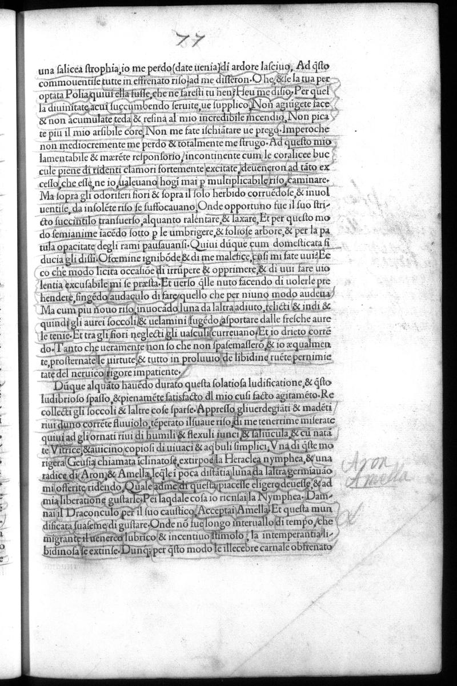

Signature e7r
Folio 39r, Quire e

British Library, London — C.60.o.12
HIGH
Annotations
CROSS_REFERENCE (1)
Hand A: Ben Jonson
139
Detail, (e7r)
Though this hatching enhances the visual appeal of the image, the use of shadow also
supports the argument that the annotator was reading with stage design in mind.
Performances of masque were held in the evening under artificial light. If this GELOIASTOS
relief was to be used in a masque, a playwright would need to consider how light from known
sources would fall upon the stage display in order to maximize its visual effect.
Hand A also takes an interest in tr...
Russell, PhD Thesis, p. 150 (Ch. 6)
Hand A: Ben Jonson
139
Detail, (e7r)
Though this hatching enhances the visual appeal of the image, the use of shadow also
supports the argument that the annotator was reading with stage design in mind.
Performances of masque were held in the evening under artificial light. If this GELOIASTOS
relief was to be used in a masque, a playwright would need to consider how light from known
sources would fall upon the stage display in order to maximize its visual effect.
Hand A also takes an interest in tr...
Russell, PhD Thesis, p. 150 (Ch. 6)